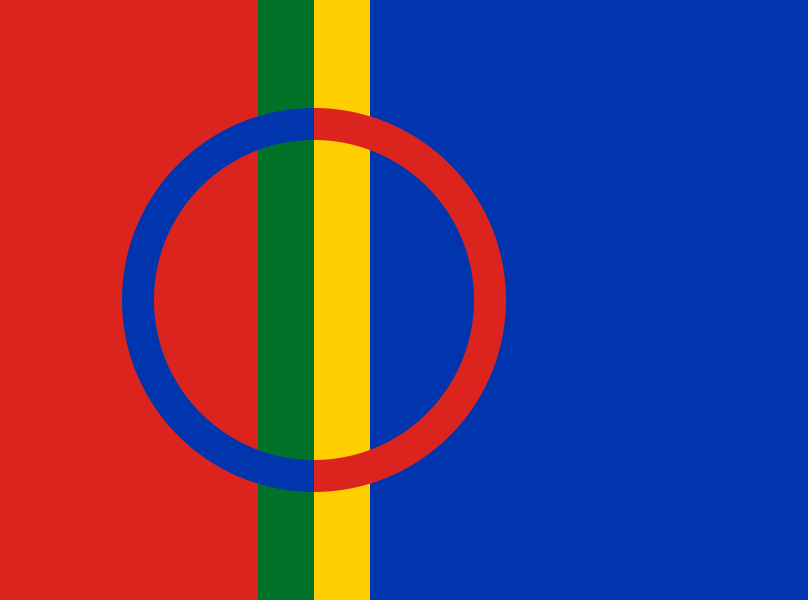

Team Ville Sundell on vaalirahoituslain (2009/273) mukainen rekisteröimätön ehdokkaan tukiryhmä. Tukiryhmä ei käytä ulkopuolista rahoitusta.
Team Ville Sundell on vaalirahoituslain (2009/273) mukainen rekisteröimätön ehdokkaan tukiryhmä. Tukiryhmä ei käytä ulkopuolista rahoitusta. Team Ville Sundell on vaalirahoituslain (2009/273) mukainen rekisteröimätön ehdokkaan tukiryhmä. Tukiryhmä ei käytä ulkopuolista rahoitusta.
 Team Ville Sundell är en oregistrerad kandidats stödgrupp i enlighet med Valfinansieringslagen (2009/273). Stödgruppen använder inte extern finansiering.
Team Ville Sundell är en oregistrerad kandidats stödgrupp i enlighet med Valfinansieringslagen (2009/273). Stödgruppen använder inte extern finansiering.
 Team Ville Sundell lea válgga ruhtadeami lága (2009/273) vuođul eaiggáduvvon kandidáhta veahkkejoavku. Veahkkejoavku ii geavaš olggobealde ruhtadeami.
Team Ville Sundell is an unregistered candidate support group in accordance with the Act on a Candidate’s Election Funding (2009/273). The support group does not use external funding.
| team | at | villesundell | . | fi |